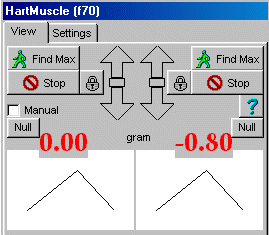
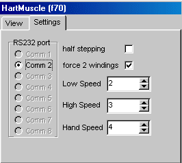

RF 2, Onset Systolische Bloeddruk
|
This Midac-function is specially ment for the measurement of a dual hartmuscle tension measurement.
It mainly serves the following purposes
The second option is not yet included, because we first need real data to test the algoritme.
|
This is the normal view of this Midac function.
It gives information about the actual force of both muscles and controls to control both the motors.
Find Max and Stop are buttons for the setting of the automatic muscle length. When maximum is set, the small lock will close, preventing the further control of the motors, as well by hand as by computer. By clicking on lock, it will toggle between open and closed. When the lock is open the motors can be controled either by hand or by computer. When the optimal length is set by the computer, a curve will be shown, with on the horizontal axis the length and on the the vertical axis the force.
The force just above the curves always shows the actual force (which is updated 10 times per second).
The motors can be controled by the computer keybord, when the manual checkbox is not checked and this window has focus (the caption of the window must be highlighted). The small green block between the arrows, indicates which of the motors is controled by the keyboard.
The meaning of the keyboard keys is as follows up-arrow move motor slow upwards, increasing the muscle length ctrl + up-arrow move motor fast upwards down-arrow move motor slow downwards ctrl + down-arrow move moter fast downwards right-arrow attach keyboard controls to the right motor left-arrow attach keyboard controls to the left motor
|

By clicking on the numerical force value, you can adjust the font of that force value. |
|
These settings should normally be left unchanged.
RS232 port indicates to which commport the motor controler is connected.
Halfstepping gives a smoother movement of the motors, but because the used motors have a too low torque for this system, it doesn't work. So leave this checkbox OFF.
Force 2 windings gives the motors more power, which should be ON, because the motors already have a low torque.
Low speed and high speed determines the speed off the motors, when controled by the computer. Handspeed is the speed of the motors when controlled manually. The value can range from 1 to 13. During the first experiments the best settings should be determined.
|
 |
© Copyright Instrumentele Dienst
SM/GvV, 27-09-2002